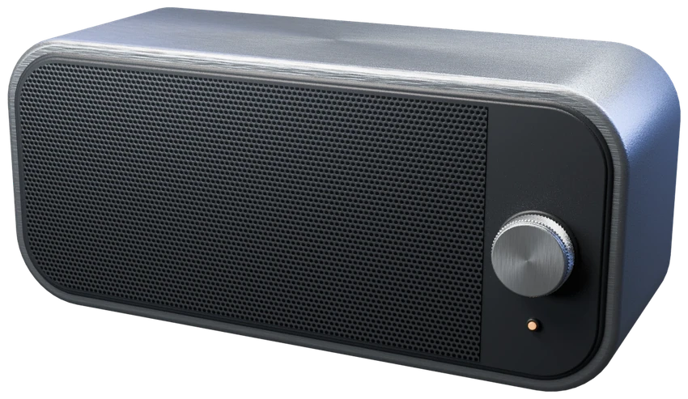

Product storytelling
A scroll-led reveal shows the speaker’s materials, controls and scale.
OUR WORK / STOREFRONT CONCEPT
A product story you can explore, from the first look to checkout.

Scroll through the speaker reveal, hear the listening demo, and compare finishes. The storefront and checkout are a working simulation, not a real sale.
A scroll-led reveal shows the speaker’s materials, controls and scale.
One camera angle lets Brushed Silver, Ember, and Studio Blue speak for themselves.
Choose a model and finish, then see the order reflected in a demo receipt.